# A tibble: 6 × 3
species island sex
<chr> <chr> <chr>
1 Adelie Torgersen male
2 Adelie Torgersen female
3 Adelie Torgersen female
4 Adelie Torgersen <NA>
5 Adelie Torgersen female
6 Adelie Torgersen male Types of Variables and Univariate Plots
IN2039: Data Visualization for Decision Making
Alan R. Vazquez
Department of Industrial Engineering
Agenda
- Types of Variables
- One Categorical Variable
- One Numerical Variable
Types of variables
Before creating a graph, we must examine the type of values that our dataset variables take.
There are two main types of variables:
Numerical variables.
Categorical variables.
Numerical variables
These take values that represent numerical measurements or quantities.
- Height (in centimeters).
- Weight (in kilograms).
- Age (in years).
- Price (in dollars).
- Time (in hours or seconds).
- Exam score (number of points on a 100-point scale).
Types of numerical variables
Numerical variables are divided into two types:
- Discrete: variables that take integer values.
Examples:
- Number of children (0, 1, 2, or 3)
- Number of students in a class (20, 30, or 35)
- Number of books in a library (10,000, 15,000, 20,000)
- Continuous: variables that have a large range of possible values.
Examples:
- A person’s height (could be within the range of 1.60 m to 1.85 m)
- Ambient temperature (could be within the range of -30 \(^\circ\)C to 50 \(^\circ\)C)
- Time for an Uber to arrive (between 5 and 60 minutes)
Categorical variables
These take values that fall into categories.
A category is a class or division of people or things that share particular characteristics.
| Variable | Categories |
| Amazon review | 1\(\bigstar\), 2\(\bigstar\), 3\(\bigstar\), 4\(\bigstar\), 5\(\bigstar\) |
| Country of origin | México, Canadá, EUA |
| Postal code | 72703, 90034, 3000, … |
Classification of categorical variables
Categorical variables are divided into two important types:
- Nominal
- Ordinal
Nominal categorical variables
A categorical variable is nominal if its categories do not have a specific order.
Examples:
- Political party affiliation (Democrat or Republican).
- Dog breed (Shepherd, Hound, Terrier, Other).
- Computer operating system (Windows, macOS, Linux).
Ordinal categorical variables
A categorical variable is ordinal if its categories do have a meaningful order.
Examples:
- T-shirt size (Small, Medium, Large).
- Education level (High School, University, Postgraduate).
- Income level (Less than $250K, $250K-$500K, More than $500K)
Interesting fact…
Integer values (e.g., 1, 2, 3, …, 5) can represent nominal or ordinal categorical variables.
| Representation | 1 | 2 | 3 | 4 |
| Blood Type | A | B | AB | O |
| Review | Bad | Fair | Good | Very Good |
In practice, boolean values (TRUE and FALSE) often represent nominal categories.
Remember

A general difference is …
Quantitative variables (discrete or continuous) are those where addition or subtraction makes sense.
Categorical variables (nominal or ordinal) are those where addition or subtraction does NOT make sense.
One Categorical Variable
Example 1: Penguins dataset
We will illustrate the concepts using the penguins.xlsx dataset. We will focus on visualizing the following categorical variables: species, island y sex.
Bar chart
It visually represents frequencies or percentages of the categories of a categorical variable. The frequency (or percentage) is represented by a bar of proportional height.
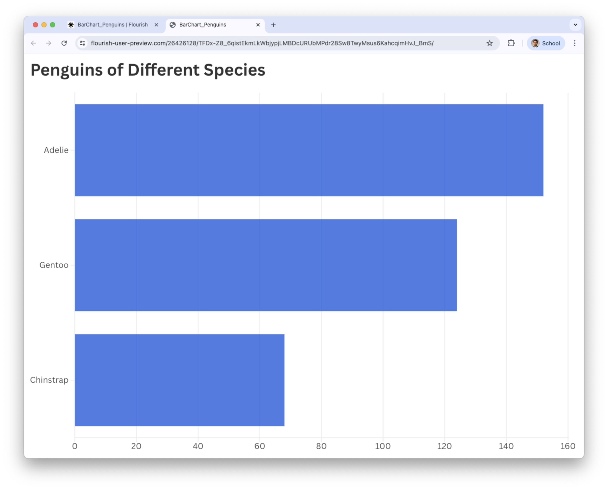
Construct a bar chart in Flourish

In the visualization gallery, choose Bar Chart.
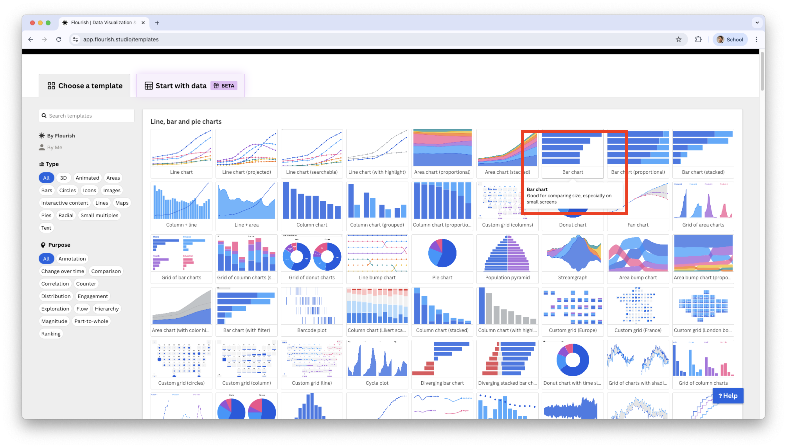
Replace the data with your own
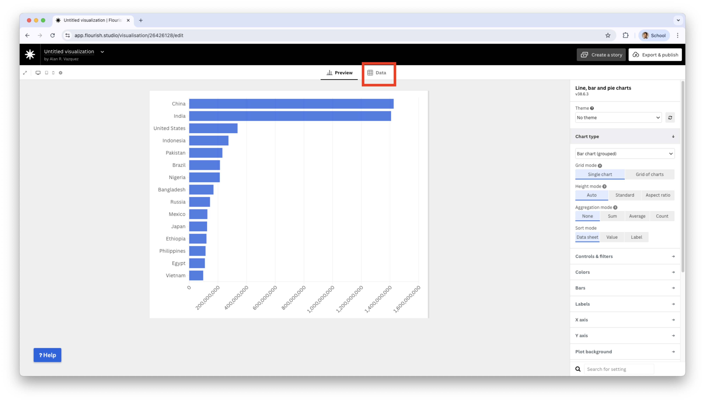
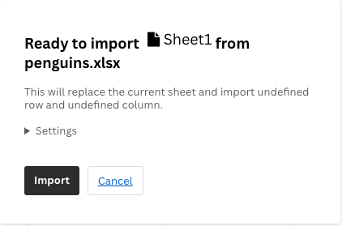
Select the correct variables
Unfortunately, it is not easy to create a standard bar chart with the counts of each category. To do this, we assign the variable species to Labels/time, and an auxiliary column with complete entries to Values. In this case, we use the year.
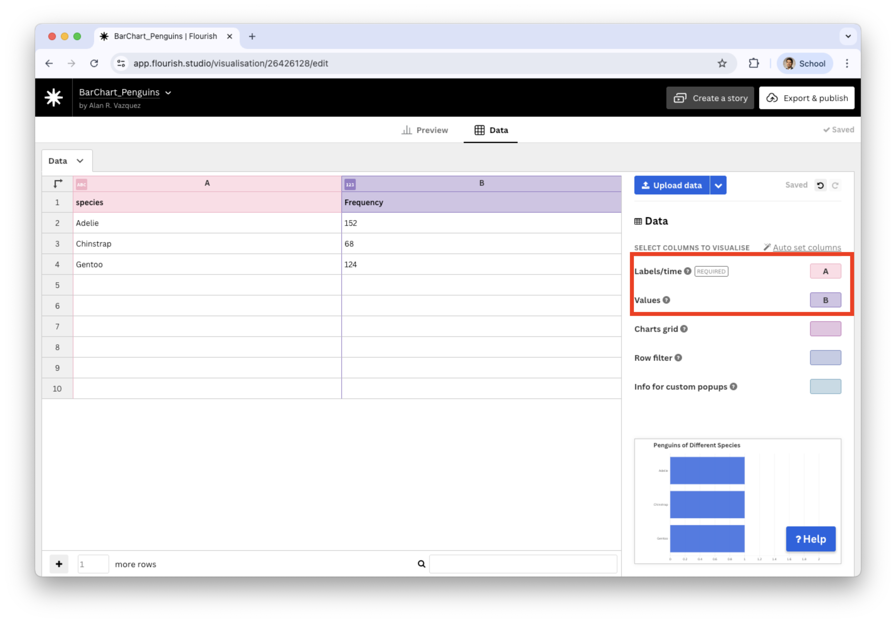
The preview plot has all bars at the same height. To replace the height for the frequencies of the categories, we change the Agregation mode to Count.
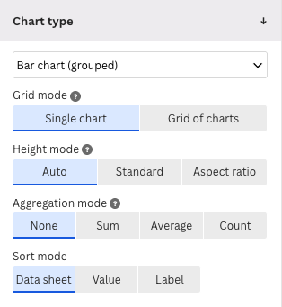
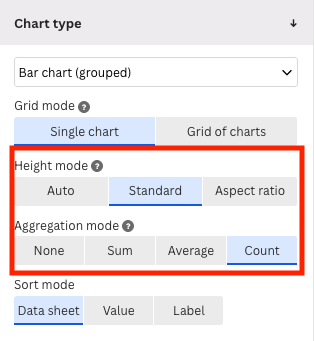
We also change the Height mode to Standard to enhance the visualization.
Principle 1: Define the message
Following Principle 1 of data visualization, we add a header or title to the plot by going to the section Header.
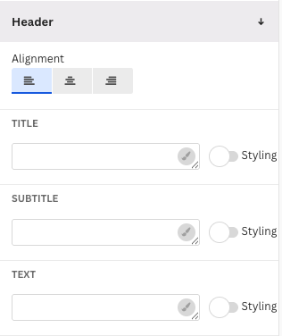
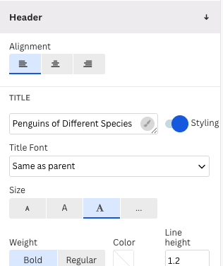
Final bar chart
We see that most penguins are Adelie.
Example 2: Boston Housing Dataset
This dataset contains information collected by the U.S. Census Bureau on housing in the Boston, Massachusetts area. The dataset is in Boston_dataset.xlsx.
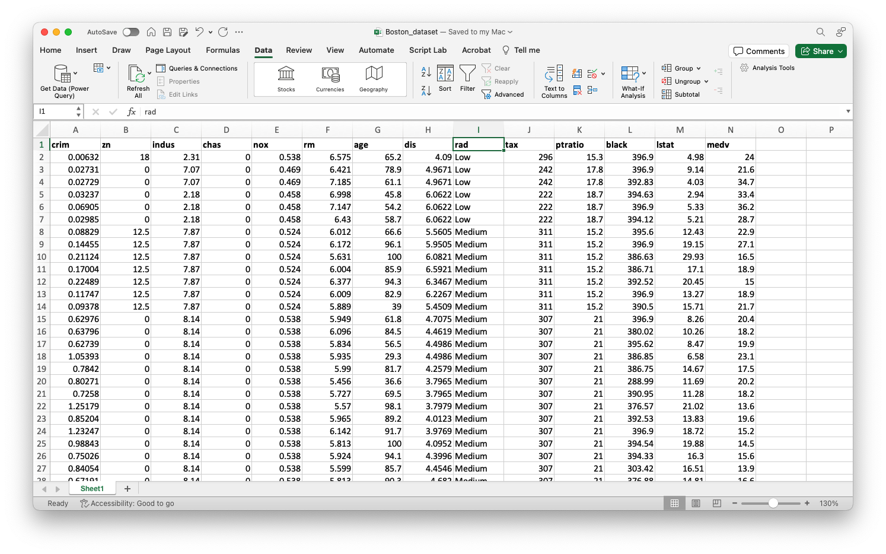
We concentrate on the following variables:
chas: Whether the house is next to the Charles River (1: Yes and 0: No)rad: Index of accessibility to radial highways (0: Low, 1: Medium, 2: High).
Data wrangling with R
To create a effective bar plots in Flourish, we must wrangle the variables chas and rad a little bit.
Specifically, we must ensure that these variables are categorical and their categories have the appropriate names.
The variables are numeric because their header shows a dbl.
# A tibble: 6 × 2
chas rad
<dbl> <dbl>
1 0 0
2 0 0
3 0 0
4 0 0
5 0 0
6 0 0To set variables as categorical we use the functions mutate() and as.factor().
Now the header of the variables show a fct indicating that the variables are categorical.
Next, we replace the 0 and 1 of chas for the label “No” and “Yes”, respectively. To this end, we use the function mutate() and caste_match().
Using the same functions, we replace the 0, 1, and 2 in the variable rad by “Low”, “Medium”, and “High”, respectively.
Now, the columns show the actual category labels instead of the coded (or number) labels.
We save the new dataset using the function write_xlsx() from the writexl package in R.
We then proceed to visualize the processed data using Flourish.
Let’s create a bar chart for chas.
We load the dataset into Flourish.
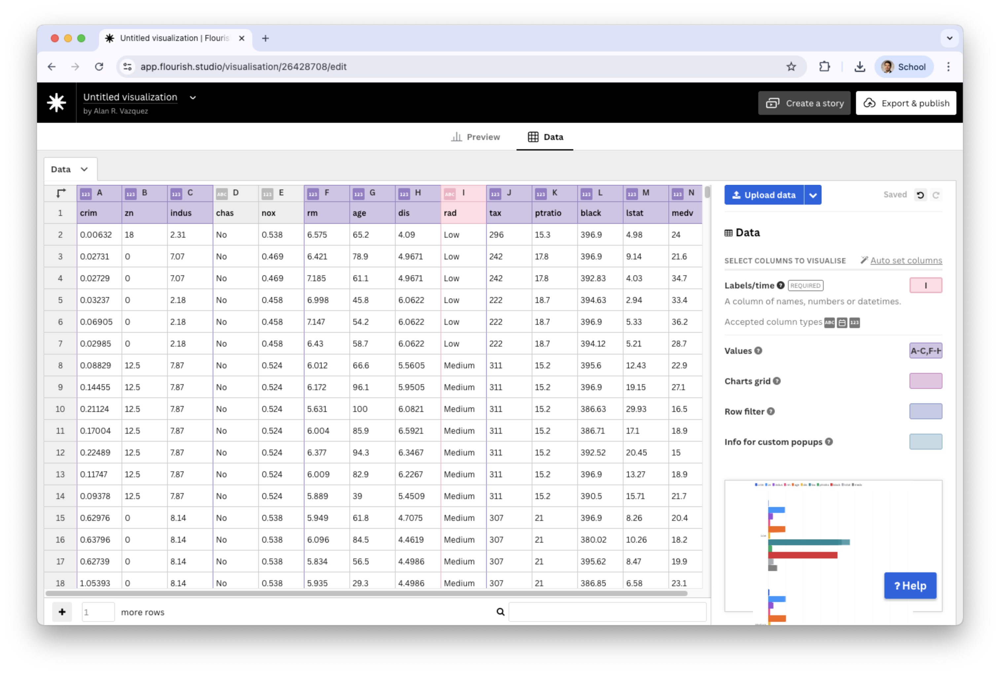
We assign the chas variable to the Labels/time. We also assign an auxiliary column with complete entries to Values. In this case, we use nox.
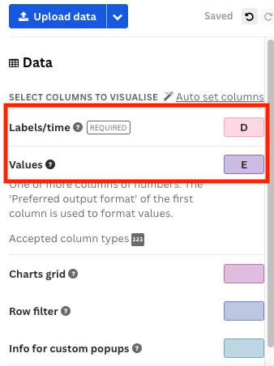
Now, we go back to the Preview tab and set Aggregation mode to Count.
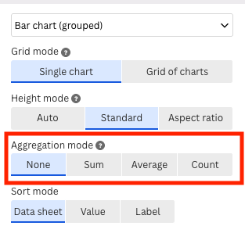
In the menu of the Preview tab, we add a title and a good label for the horizontal axis.
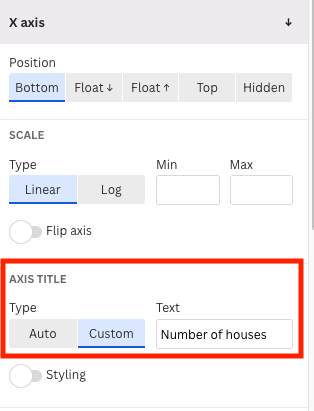
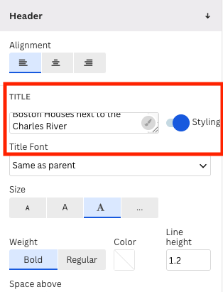
Bar chart for chas
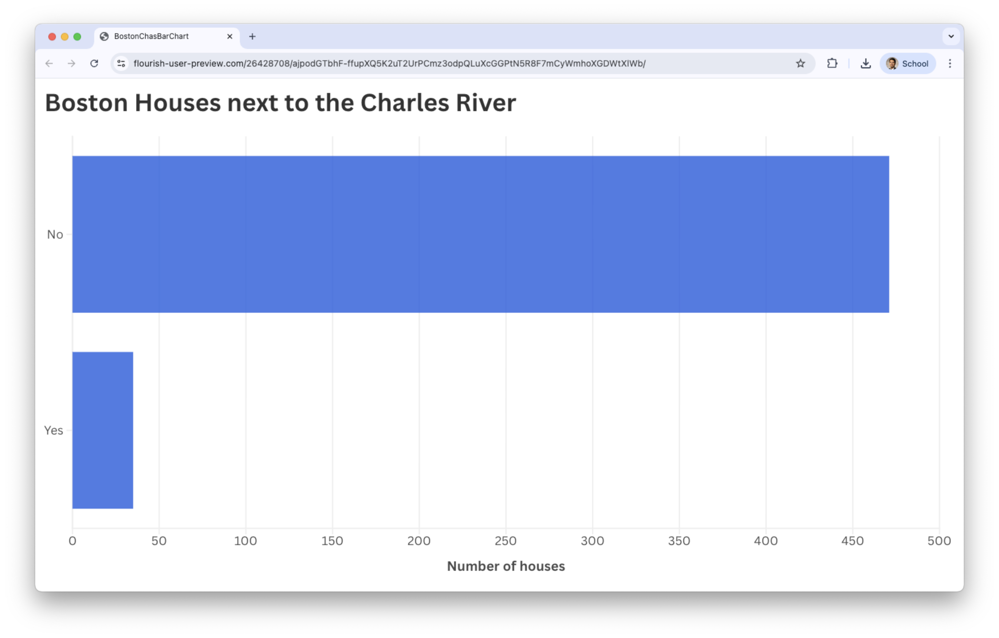
Following similar steps, we create a bar chart for rad in Flourish.
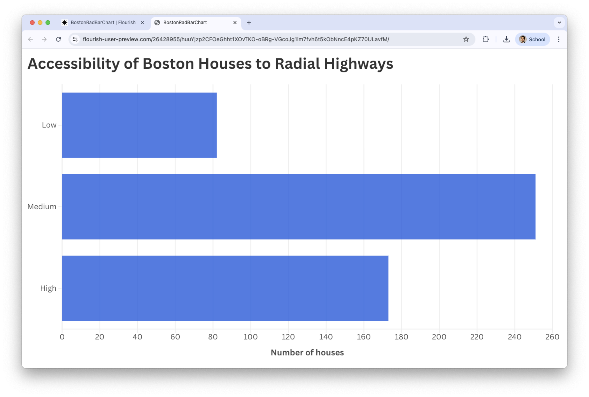
Collapsing categories
Some categorical variables tend to have many categories. For example, states in a country or postal codes. In these cases, it can be difficult to visualize all the categories in a single graph.
One strategy for developing an effective visualization is to collapse categories.
For example, in the variable rad, we can collapse the categories Medium and High into a single category called Other.
We collapse categories using the function called case_when().
Collapsing categories simplifies the graph and allows us to emphasize a category like Low and see how it compares to the other categories (as a whole).
We save the new dataset using the function write_xlsx().
We then proceed to visualize the processed data using Flourish.
The resulting bar chart
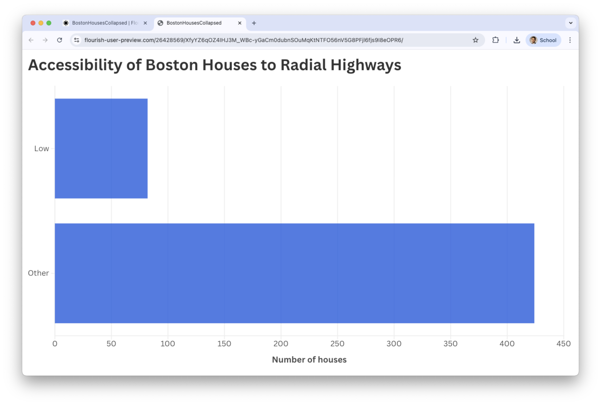
One Numerical Variable
Example 3
A piston is a mechanical device found in most engines.
One measure of a piston’s performance is the time it takes to complete a cycle, which we call “cycle time” and is measured in seconds.
The file “CYLT.xlsx” contains 50 cycle times of a piston operating under fixed conditions.
Beeswarm
Visualizes the distribution of individual observations along a numeric axis.
- Each point represents one data value, and the points are arranged to avoid overlapping—similar to bees clustering around a hive.
- This makes it easy to see where observations are dense or sparse, while still showing every individual data point.
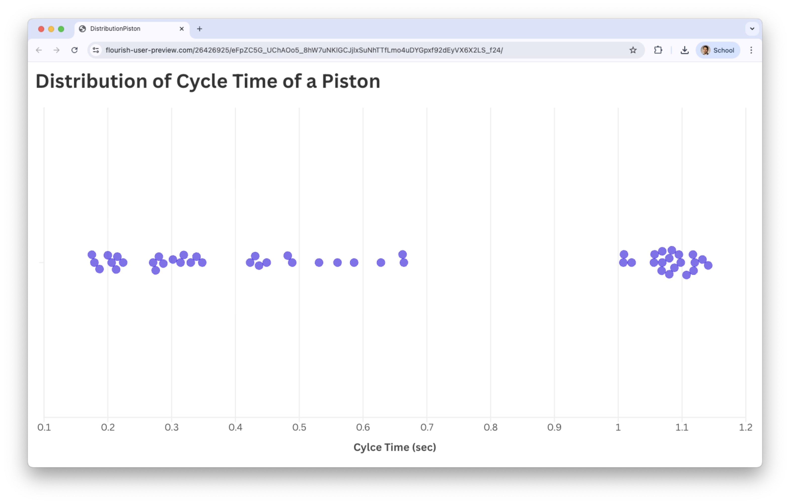
- Unlike histograms, which aggregate counts into bars, beeswarm plots preserve every point, giving a more detailed picture of the underlying distribution.
Beeswarm in Flourish
Beeswarm is in the section Scatter of the catalog of visualizations in Flourish.
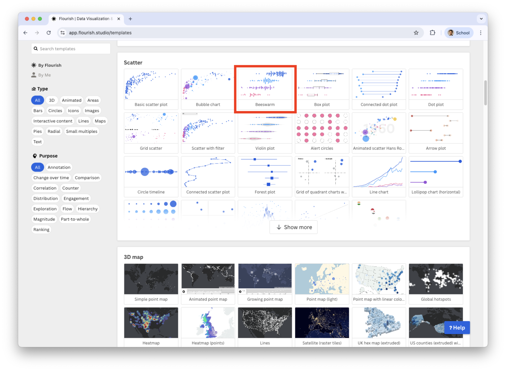
In the Beeswarm plot, we replace the current data with the data in “CYLT.xlsx” in the Data tab.
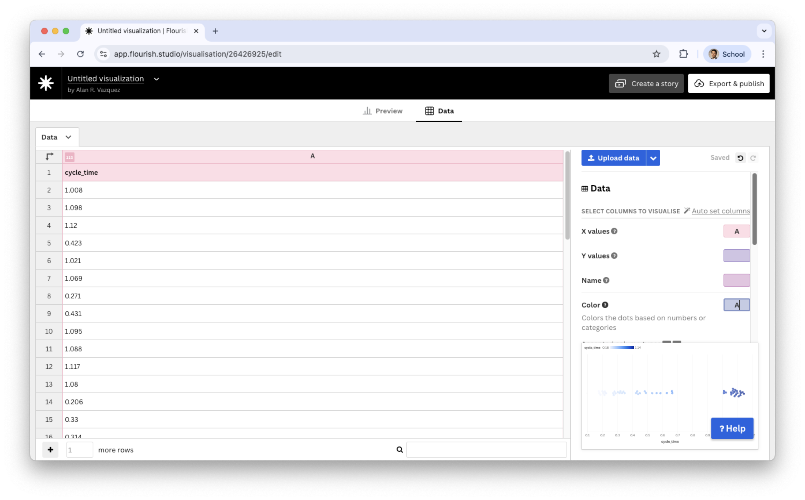
In the Data tab, we only assign the cycle_time variable to the X values section.
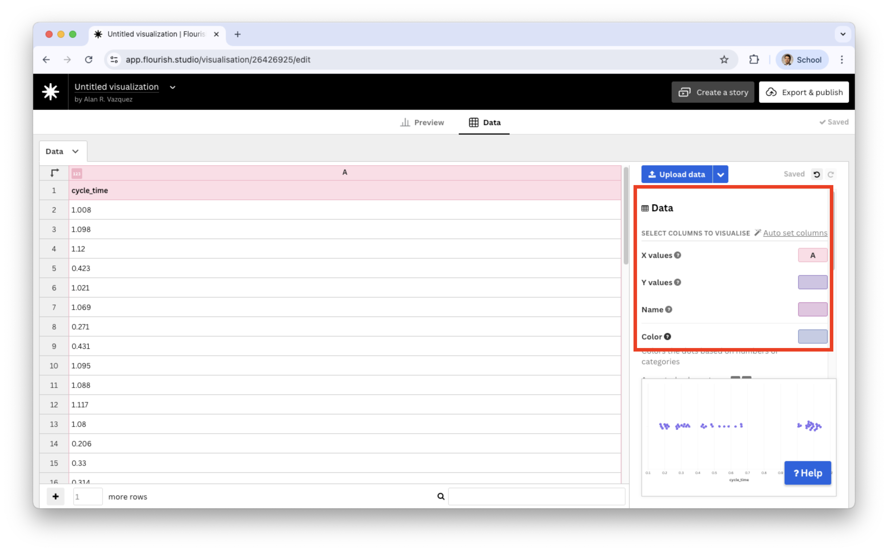
Let’s go back to the Preview tab.
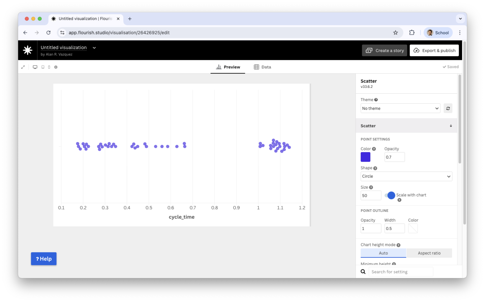
There, we modify the label of the horizontal axis X and header in the sections X axis and Header.
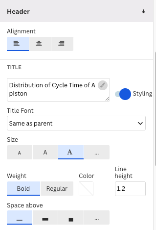
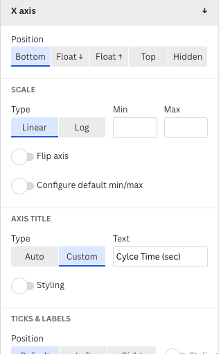
Beeswarm plot
What to look for in a beeswarm plot?
- Clusters of points that reveal dense regions in the distribution.
- Areas where points are more spread out, indicating low-frequency regions.
- Gaps along the axis where no observations appear.
- Outliers, visible as isolated points far from the main cluster.
- The overall shape of the distribution formed by the pattern of points.
Multiple Variables
Return to main page

Tecnologico de Monterrey